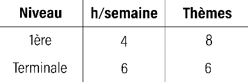

Le programme scolaire de la spécialité représente en première un volume de 4 heures par semaine, puis 6 heures par semaines en terminale. Il est composé de 8 thèmes en première année, et de 6 thèmes en terminale. Pendant ces heures vous apprendrez les bases des languages de programmation comme le python ou l'html !
